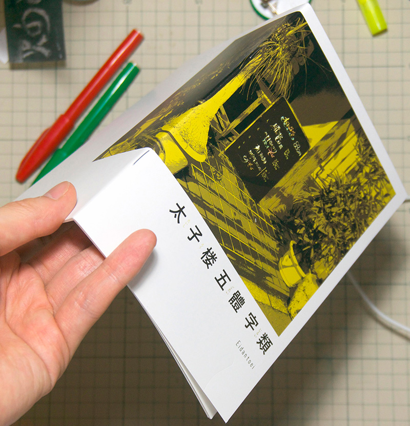

<!doctype html>
<html>
<head>
<meta charset="utf-8">
<meta name="viewport" content="width=device-width,initial-scale=1.0">
<title>Eidantoei</title>
<style>
body {
  background:url('images/20141207001534.png.jpg') top left repeat-y;
  font-family:sans-serif;}
a { color:#dc0009;}
del { opacity:0.6;}
h1,h2,h3,h4,h5 { font-weight:normal;}
h1::before { color:#939393; content: "# "; }
h2::before { color:#939393; content: "## "; }
h3::before { color:#939393; content: "### "; }
header h1 a {
  text-decoration:none;
  color:black;
}
.small {font-size:75%;}
.text-box {
  display:inline-block;
  vertical-align: top;
  min-width:300px;
  max-width:500px;
  background:url('images/bg-transp-wh-50.png') repeat;
  margin:10px;
  padding:0.5em 0.5em 100px;
}
.text-box h2 {
  margin-top:1.5em;
}
.text-box.profile {
  vertical-align: bottom;
}
ul {padding-left:1.5em;}
</style>
</head>
<body>
<script async="" src="//www.google-analytics.com/analytics.js"></script><script>
  (function(i,s,o,g,r,a,m){i['GoogleAnalyticsObject']=r;i[r]=i[r]||function(){
  (i[r].q=i[r].q||[]).push(arguments)},i[r].l=1*new Date();a=s.createElement(o),
  m=s.getElementsByTagName(o)[0];a.async=1;a.src=g;m.parentNode.insertBefore(a,m)
  })(window,document,'script','//www.google-analytics.com/analytics.js','ga');
  ga('create', 'UA-60000675-1', 'auto');
  ga('send', 'pageview');
</script>
<div class="wrapper">
  <header>
    <h1><a href="http://eidantoei.org/">Eidantoei</a></h1>
  </header>
  <div class="text-box">
    <h2>『銀座線で見た野良サイン』</h2>
    <ul>
      <li style="list-style:none;"></li>
    </ul>
    <p>銀座線の全駅をまわって見つけた<a href="http://norasign.info/">野良サイン</a>を、駅ごとにまとめた本</p>
    <ul>
      <li>発行日: 2016年5月5日 <span class="small">(COMITIA116 にて発表)</span></li>
      <li>仕様: B6判, 無線綴じ, 80頁</li>
      <li>写真・文・編集: kssk</li>
      <li>写真協力: <a href="https://twitter.com/jtc21">JTC</a></li>
    </ul>
    <h3>入手方法</h3>
    <ol>
      <li><a href="https://eidantoei.booth.pm/">BOOTH</a> (通販)</span>
    </ul>
  </div>
  <div class="text-box">
    <h2>『太子楼五體字類』</h2>
    <ul>
      <li style="list-style:none;"></li>
      <li style="list-style:none;"><blockquote class="instagram-media" data-instgrm-version="5" style=" background:#FFF; border:0; border-radius:3px; box-shadow:0 0 1px 0 rgba(0,0,0,0.5),0 1px 10px 0 rgba(0,0,0,0.15); margin: 1px; max-width:658px; padding:0; width:99.375%; width:-webkit-calc(100% - 2px); width:calc(100% - 2px);"><div style="padding:8px;"> <div style=" background:#F8F8F8; line-height:0; margin-top:40px; padding:50% 0; text-align:center; width:100%;"> <div style=" background:url(); display:block; height:44px; margin:0 auto -44px; position:relative; top:-22px; width:44px;"></div></div><p style=" color:#c9c8cd; font-family:Arial,sans-serif; font-size:14px; line-height:17px; margin-bottom:0; margin-top:8px; overflow:hidden; padding:8px 0 7px; text-align:center; text-overflow:ellipsis; white-space:nowrap;"><a href="https://instagram.com/p/2Mz9uZBvNM/" style=" color:#c9c8cd; font-family:Arial,sans-serif; font-size:14px; font-style:normal; font-weight:normal; line-height:17px; text-decoration:none;" target="_blank">ksskさん(@kssk)が投稿した写真</a> - <time style=" font-family:Arial,sans-serif; font-size:14px; line-height:17px;" datetime="2015-05-03T00:47:16+00:00">2015 5月 2 5:47午後 PDT</time></p></div></blockquote>
<script async defer src="//platform.instagram.com/en_US/embeds.js"></script></li>
    </ul>
    <p>新宿・花園通り沿いの杭州料理屋のマスターがチョークで書いた文字をまとめた本</p>
    <ul>
      <li>発行日: 2015年5月5日 <span class="small">(COMITIA112 にて発表)</span></li>
      <li>仕様: B6判, 中綴じ, 32頁 <span class="small">(巻頭10頁のみカラー)</span></li>
    </ul>
    <h3>入手方法</h3>
    <ol>
      <li><a href="http://shop.comiczin.jp/products/detail.php?product_id=26457">COMIC ZIN</a> (通販・店頭販売)</li>
      <li><a href="https://eidantoei.booth.pm/">BOOTH</a> (通販)</li>
    </ol>
  </div>
  <div class="text-box profile">
    <h2>Eidantoei</h2>
    <ul>
      <li>kssk
        <ul>
          <li>アクティビティ
            <ul>
              <li>nikki <a href="http://kssknonikki.tumblr.com">kssknonikki</a></li>
              <li>Twitter <a href="https://twitter.com/ooooooooo">@ooooooooo</a></li>
              <li>Instagram <a href="https://instagram.com/kssk">@kssk</a></li>
            </ul></li>
          <li>連絡先
            <ul>
              <li>Twitter <a href="https://twitter.com/ooooooooo">@ooooooooo</a></li>
              <li></li>
            </ul></li>
        </ul></li>
    </ul>
    <h3>これまでの参加イベント</h3>
    <ul>
      <li>COMITIA116 (2016/5/5)</li>
      <li><a href="http://mojiflea.market/"><ruby>文字<rp>(</rp><rt>もじ</rt><rp>)</rp></ruby>フリマ</a> (2015/10/25)</li>
      <li>COMITIA113 (2015/8/30)</li>
      <li>COMITIA112 (2015/5/5)</li>
    </ul>
  </div>
</div>
</body>
</html>
